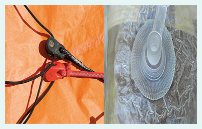

GoKite Cabarete provides a complete service for kiteboarding equipment repairs of any kind.
We specialize in kiteboarding kites, bladders, bars and boards. We believe that if a kite is repaired properly,
it will perform flawlessly without performance loss. Our specially modified sewing machines allow us to line up and repair rips fiber-for-fiber.
- Dimensionally perfect within 1 mm.
- OEM fabrics, thread, needle gauges, and stitching patterns.
- Fast personal service.
- UV resistant fabric and thread that will never gather sand or mildew.
- All our repairs are totally compliant with the natural stretch and shape of your kites.
- Good-will and customer-oriented pricing and payment policies.
- All our repairs are guaranteed forever.

Bladder Repair
Many times bladders can be repaired when we are repairing a failed leading edge or strut sleeve.
If the bladder damage is obvious we will attempt to repair the bladder. After finishing the sewn repairs
we will inflate the bladder to see if the repair has held. If the repair is good we will bill for the bladder repair,
if the repair doesn't hold there will be no charge for the repair. Many times bladders that have a heavy salt or talc
residue on them cannot be repaired. This residue prevents the plastic from bonding to itself.
Board Repair
Our board repair specialist will repair your board with care and precision to restore it to its original
shape and performance. Here at GoKite Cabarete we believe in using only quality fiberglass materials and high quality
paint.